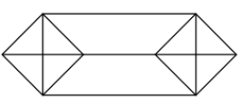
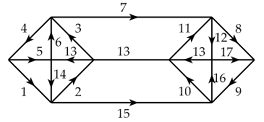

ELİNİZİ KALDIRMADAN ÇİZİN
Bu şekli elinizi kaldırmadan çizebilir misiniz?

Cevap:
Doğruların kesiştiği noktaya bakalım. Sol ve sağ uçta 3 doğrunu kesiştiği iki nokta var, tek sayıda doğru kesiştiği için bunlara “tek boğum” diyoruz. Tek boğumlar başlama ve bitme noktalarıdır. Bütün diğer noktalarda çift sayıda (4) doğru kesişiyor, bunlar “geçiş” noktalarıdır.
